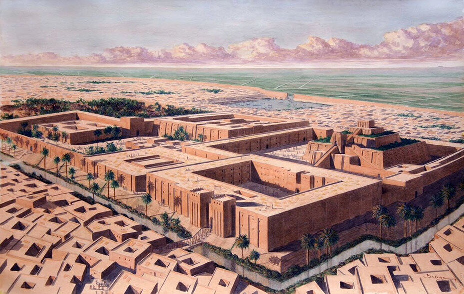

Астрономическая деятельность прослеживается в источниках по крайней мере с VI—IV тысячелетий до н. э., а наиболее ранние упоминания названий светил встречаются в «Текстах пирамид», датируемых «XXV—XXIII» , в. до н. э., — религиозном памятнике. Отдельные особенности мегалитических сооружений и даже наскальных рисунков первобытных людей истолковываются как астрономические. В фольклоре также множество подобных мотивов. В соответствии с этими устойчивыми циклами появились единицы измерения времени: сутки, месяц, год. Хотя взаимное расположение звёзд выглядит неизменным, было замечено, что несколько светил (планеты) являются исключением из этого правила. Наблюдая изменения на небесной сфере, люди заметили их связь со сменой сезонов на Земле. Это натолкнуло на мысль, что небесные движения связаны и с другими земными явлениями — влияют на земную историю или предсказывают важнейшие события — рождение царей, войны, голод, эпидемии и др. Доверие к астрологическим фантазиям значительно содействовало развитию научной астрономии, поскольку иначе обосновать властям практическую пользу от наблюдений за небом было бы нелегко. По этим причинам особое внимание древние астрономы уделяли таким редким и непериодическим явлениям, как затмения, появление комет, падение метеоритов и т. п.
Шумеро-аккадское государство Вавилон существовало со II тыс. до н. э. по VI век до н. э. (в последние десятилетия им правили халдеи, а в VI веке до н. э. страной завладела Персия). Жрецы-вавилоняне оставили множество астрономических таблиц. Они же выделили основные созвездия и зодиаки, ввели деление полного угла на 360°, развили тригонометрию. Во II тыс. до н. э. у шумеров появился лунный календарь, усовершенствованный в I тыс. до н. э. Год состоял из 12 синодических месяцев — шесть по 29 дней и шесть по 30 дней, всего 354 дня. Обработав свои таблицы наблюдений, жрецы открыли многие законы движения планет, Луны и Солнца, могли предсказывать затмения. В 450 году до н. э. вавилоняне уже знали «метонов цикл» (235 месяцев с большой точностью совпадают с 19 солнечными годами). Впрочем, китайцы открыли его ещё раньше.
Разливы Нила происходят в начале лета, и как раз на это время приходится первый восход ярчайшей звезды неба — Сириуса, по-египетски называемого «Сотис». До этого момента Сириус не виден. Наверное, поэтому «сотический» календарь употреблялся в Египте наряду с гражданским. Сотический год — это период между двумя гелиакическими восходами Сириуса, то есть он совпадал с сидерическим годом, а гражданский год состоял из 12 месяцев по 30 дней плюс пять дополнительных суток, всего 365 дней. Недель сначала не было, месяц делился на 3 декады. Употреблялся в Египте и лунный календарь с метоновым циклом, согласованный с гражданским. Позже под влиянием Вавилона появилась семидневная неделя. Сутки делились на 24 часа, которые сначала были неравными (отдельно для светлого и тёмного времени суток), но в конце IV века до н. э. приобрели современный вид. В Египте, в отличие от Вавилона, использовалась десятичная система, но в сутках, кроме 10 светлых часов, они выделяли ещё по часу на переходные периоды, поэтому и получилось 12 часов; то же для тёмного времени суток.
| Тип(планета/звезда) | Название | Масса | Номер планеты | |
| Масса в КГ | % Массы солнечной системы | |||
| Звезда | Солнце | 1989 * 10^27 кг | 99.86% | - |
| Планета | Меркурий | 0.32 * 10^24 кг | 0.134% | 1 |
| Венера | 4.81 * 10^24 кг | 2 | ||
| Земля | 5.97 * 10^24 кг | 3 | ||
| Марс | 0.63 * 10^24 кг | 4 | ||
| Юпитер | 1876 * 10^24 кг | 5 | ||
| Сатурн | 561 * 10^24 кг | 6 | ||
| Нептун | 101.5 * 10^24 кг | 7 | ||
| Уран | 86 * 10^24 кг | 8 | ||